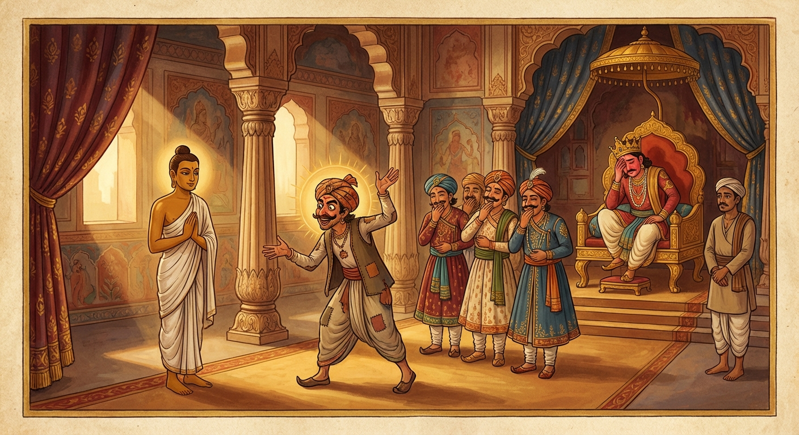

5. තණ්ඩුලනාළි ජාතකය (5)
“කිමග්ඝති තණ්ඩුලනාළිකා” (සහල් නැළියක් කොපමණ අගීද?) යන මේ ගාථාව ශාස්තෘන් වහන්සේ ජේතවනයෙහි වැඩවසන සමයෙහි ලාලුදායි තෙරුන් අරබයා දේශනා කළ සේක. එකල්හි ආයුෂ්මත් දබ්බමල්ලපුත්ත තෙරණුවෝ සංඝයාගේ භත්තුද්දේසක (සඟබත් නියම කරන) ධුරය දැරූහ. උන්වහන්සේ උදෑසන සලාක බත් බෙදන කල්හි ලාලුදායි තෙරණුවන්ට ඇතැම් දිනක උසස් බතක් ද, ඇතැම් දිනක පහත් බතක් ද ලැබෙයි. පහත් බතක් ලැබූ දිනට ඔහු සලාක බෙදන ගෙය (සලාකග්ගය) අවුල් කරයි. “කුමක්ද? සලාක දීමට දන්නේ දබ්බමල්ලයන් පමණක්ද? අපි නොදන්නෙමුද?” යැයි පවසයි. ඔහු මෙසේ සලාක බෙදන ස්ථානය අවුල් කරන කල්හි “එසේ නම් දැන් ඔබම සලාක බෙදන්න” යැයි පවසා (දබ්බමල්ල තෙරණුවෝ) සලාක කූඩය ඔහුට දුන්හ. එතැන් පටන් ඔහු සංඝයාට සලාක බෙදයි. එසේ බෙදන නමුත් ඔහු “මේ උසස් බතය” කියා හෝ, “මේ පහත් බතය” කියා හෝ, “අසවල් වාරයේ උසස් බත ලැබෙයි” කියා හෝ, “අසවල් වාරයේ පහත් බත ලැබෙයි” කියා හෝ නොදනී. (සලාක ලබන භික්ෂූන්) පේළියට සිටුවද්දී ද “අසවල් වාරයේ අය පේළියට සිටිය යුතු යැයි” ඔහුට වැටහීමක් නැත. භික්ෂූන් සිටගෙන සිටින වෙලාවට “මේ ස්ථානයේ මේ පේළිය සිටියේය, මේ ස්ථානයේ මේ පේළිය” යැයි කියමින් බිම හෝ බිත්තියේ හෝ ඉරක් අඳියි. පසු දින සලාක බෙදන ගෙයි භික්ෂූන් අඩු වුවහොත් හෝ වැඩි වුවහොත්, (කලින් දා භික්ෂූන්) අඩු විට ඉර පහළින් ද, වැඩි විට ඉහළින් ද පිහිටයි. හෙතෙම (සලාක ලැබිය යුතු) පේළිය නොදැන, (බිත්තියේ ඇඳි) ඉර සලකුණු කොටගෙන සලාක බෙදයි.
එවිට භික්ෂූහු ඔහුට මෙසේ කීහ. “ඇවැත්නි උදායි, ඉර පහළ හෝ ඉහළ හෝ වේවා (එය වෙනස් වේ), නමුත් උසස් බත ලැබෙන්නේ අසවල් වාරයටය, පහත් බත ලැබෙන්නේ අසවල් වාරයටය.” ඔහු භික්ෂූන්ට විරුද්ධවාදීකම් කරමින් “එසේ නම් මේ ඉර මෙසේ පිහිටියේ මන්ද? මා ඔබලා කියන දෙය පිළිගන්නම්ද? නැත, මම මේ ඉර (සලකුණ) පිළිගනිමි”යි කියයි. ඉක්බිති තරුණ භික්ෂූහු ද සාමණේරවරු ද “ඇවැත්නි ලාලුදායි, ඔබ සලාක බෙදන කල භික්ෂූහු ලාභයෙන් පිරිහෙති. ඔබ බෙදීමට සුදුස්සෙක් නොවේ, මෙතැනින් යන්න” යැයි පවසා ඔහු සලාක බෙදන ගෙයින් ඉවතට ඇද දැමූහ. එම මොහොතේ සලාක බෙදන ගෙයි මහත් කෝලාහලයක් ඇති විය. ඒ අසා ශාස්තෘන් වහන්සේ ආනන්ද තෙරුන් විමසූහ. “ආනන්ද, සලාක බෙදන ගෙහි මහත් කෝලාහලයකි. මේ කිනම් ශබ්දයක්ද?” තෙරුන් වහන්සේ තථාගතයන් වහන්සේට ඒ කරුණ දැන්වූහ. “ආනන්ද, ලාලුදායි තමාගේ අඥාන බව නිසා අනුන්ගේ ලාභයට හානි කරන්නේ දැන් පමණක් නොවේ. පෙර ද කළේමය” යි වදාළහ. තෙරුන් වහන්සේ ඒ බව හෙළිදරව් කරන ලෙස භාග්යවතුන් වහන්සේගෙන් අයැද සිටියහ. භාග්යවතුන් වහන්සේ භවාන්තරයෙන් වැසුණු ඒ කරුණ (අතීත කථාව) පැහැදිලි කළ සේක.
අතීතයේ කාසි රට බරණැස් නුවර බ්රහ්මදත්ත නම් රජෙක් විය. එකල්හි අප මහා බෝසතාණෝ ඒ රජුගේ අගයකරුවා (තක්සේරුකරු) වූහ. හෙතෙම ඇත්, අස් ආදීන් මෙන්ම මැණික්, රන් ආදිය ද අගය කළේය. අගයකරුවා භාණ්ඩ හිමියන්ට භාණ්ඩයට අනුරූපවම මිල නියම කර දුන්නේය. නමුත් රජතුමා ලෝභී අයෙකි. හෙතෙම ලෝභී ස්වභාවය නිසාම මෙසේ සිතී ය: “මේ තක්සේරුකරු මෙසේ (සාධාරණව) අගය කරන කල්හි මාගේ රජ මැදුරෙහි ධනය නොබෝ කලකින්ම ක්ෂය වන්නේය. එබැවින් වෙනත් අගයකරුවකු පත් කරගන්නෙමි.” හෙතෙම සීහපඤ්ජරය (සී මැදුරු කවුළුව) හැර රජ මිදුල දෙස බලන්නේ, එක් කෑදර මෝඩ ගැමි මිනිසකු රජ මිදුලෙන් යනු දැක, “මොහුට මාගේ තක්සේරු කිරීමේ කාර්යය කළ හැකි වනු ඇතැ”යි සිතා ඔහු කැඳවා, “එම්බල, අපගේ තක්සේරු කිරීමේ කාර්යය කිරීමට හැකිදැ”යි ඇසීය. “දේවයනි, හැකි වෙමි”යි හෙතෙම කීය. රජතුමා තම ධනය රැකගැනීම පිණිස ඒ මෝඩයා තක්සේරු කිරීමේ තනතුරෙහි තැබීය. එතැන් පටන් ඒ මෝඩ මිනිසා ඇත්, අස් ආදීන් අගය කරන විට අගය අඩු කොට තමා කැමති පරිදි මිල කියයි. ඔහු තනතුරෙහි සිටි නිසා ඔහු යම් මිලක් කියයි ද එයම (නියමිත) මිල වෙයි.
එකල උතුරු දෙසින් අශ්ව වෙළෙන්දෙක් අශ්වයන් පන්සියයක් ගෙන ආවේය. රජතුමා ඒ (මෝඩ) මිනිසා ගෙන්වා අශ්වයන්ට මිල නියම කරවීය. ඔහු අශ්වයන් පන්සියයම එක් සහල් නැළියකට (තණ්ඩුලනාළියකට) මිල කරවා, අශ්ව වෙළෙන්දාට එක් සහල් නැළියක් දෙන ලෙස අණ කොට, අශ්වයන් අශ්ව හලෙහි තැන්පත් කරවීය. අශ්ව වෙළෙන්දා පැරණි තක්සේරුකරු වෙත ගොස් මේ පුවත සැල කොට “දැන් කුමක් කළ යුතුදැ”යි විමසීය. ඔහු මෙසේ කීය: “තක්සේරුකරු වෙත ගොස් ඔහුට අල්ලසක් දී මෙසේ අසන්න: ‘අපගේ අශ්වයන්ගේ මිල සහල් නැළියක් බව දැනගත්තෙමු. නමුත් ඔබ නිසා ඒ සහල් නැළියේ වටිනාකම දැනගනු කැමැත්තෙමු. රජු ඉදිරියේ සිට, ඒ සහල් නැළිය මෙපමණ වටින්නේ යැයි ප්රකාශ කිරීමට ඔබට හැකිද?’ කියා අසන්න. ඔහු හැකියැයි කිවහොත්, ඔහුත් සමග රජු වෙත යන්න. මම ද එහි එන්නෙමි.”
අශ්ව වෙළෙන්දා “යහපතැ”යි බෝසතුන්ගේ වචනය පිළිගෙන තක්සේරුකරුට අල්ලසක් දී ඒ බව දැන්වීය. හෙතෙම අල්ලස ලබාගෙනම “සහල් නැළිය අගය කිරීමට මට හැකි යැ”යි පැවසීය. “එසේ නම් රාජ කුලයට යමු” යි ඔහු කැඳවාගෙන රජු වෙත ගියේය. බෝසතාණෝ ද තවත් බොහෝ ඇමතිවරු ද එහි ගියහ. අශ්ව වෙළෙන්දා රජුන් වැඳ, “දේවයනි, අශ්වයන් පන්සියයක් එක් සහල් නැළියක් අගනා බව අපි දන්නෙමු. එහෙත් ඒ සහල් නැළිය කොතෙක් අගීදැයි තක්සේරුකරුගෙන් විමසනු මැනව”යි කීවේය. රජතුමා ඒ පුවත නොදන්නේ, “එම්බල තක්සේරුකරුව, අශ්වයන් පන්සියය කොතෙක් අගීදැ”යි ඇසීය. “දේවයනි, සහල් නැළියක් අගී” යැයි කීය. “යහපති, එම්බල, අශ්වයන් පන්සියයකගේ මිල සහල් නැළියක් වේවා, එහෙත් ඒ සහල් නැළිය කොතෙක් අගීදැ”යි රජු විමසීය. ඒ මෝඩ පුරුෂයා “ඇතුළත හා පිටත සහිත බරණැස් පුරවරය සහල් නැළියක් වටී” යැයි කීවේය. ඔහු පෙර රජුගේ සිත අනුගමනය කරමින් අශ්වයන් පන්සියයක් සහල් නැළියකට අගය කළේය. නැවත වෙළෙන්දාගෙන් අල්ලස් ලැබ, ඒ සහල් නැළිය ඇතුළත හා පිටත සහිත බරණැස් නුවර තරම් වටිනා බවට අගය කළේය. එකල බරණැස වට කොට ඇති පවුර දොළොස් යොදුනක් විය. මේ එහි ඇතුළතයි. පිටත වනාහි යොදුන් තුන්සියයක රටකි. ඉතින් ඒ මෝඩයා මේ සා මහත් ඇතුළත පිටත සහිත බරණැස් රාජ්යයම එකම සහල් නැළියකට මිල කළේය.
එය ඇසූ ඇමතිවරු අත්පොළසන් දෙමින් සිනාසෙමින් මෙසේ පරිහාස කළහ: “අපි මීට පෙර පොළොව සහ රාජ්යය මිල කළ නොහැකියැයි සිතා සිටියෙමු. එහෙත් මෙතරම් විශාල රජුන් සහිත බරණැස් රාජ්යය සහල් නැළියක් පමණක් වටී! අහෝ, මේ තක්සේරුකරුගේ නුවණක මහිමය! මෙතෙක් කල් මොහු කොහි සිටියේද? අපගේ රජතුමාටම මොහු ඉතා සුදුසුය.”

“රජතුමනි, අශ්වයන්ගේ වටිනාකම වූ මේ සහල් නැළිය කුමක් අගීදැයි පවසනු මැනව. මේ සහල් නැළිය ඇතුළත සහ පිටත සහිත මුළු බරණැස් නුවරම අගින්නේය.”
එකල්හි රජතුමා ලජ්ජාවට පත්ව, ඒ මෝඩයා පන්නා දමා බෝසතුන්ටම නැවත අගයකරුවාගේ (තක්සේරුකරු) තනතුර ලබා දුන්නේය. බෝසතාණෝ ද ජීවිතාන්තය දක්වා දැහැමින් කටයුතු කොට කම් වූ පරිදි (මරණින් මතු) ගියහ.
ශාස්තෘන් වහන්සේ මේ ධර්ම දේශනාව ගෙනහැර දක්වා, කථා වස්තු දෙක ගළපා, අනුසන්ධි යොදා ජාතකය සමාප්ත කළ සේක. “එදා අශිෂ්ට මෝඩ තක්සේරුකරු වූයේ මේ ලාලුදායි ය. නුවණැති තක්සේරුකරු වූයේ මම ම වෙමි.”
පස්වන වූ තණ්ඩුලනාළි ජාතක වර්ණනාව නිමාවිය.